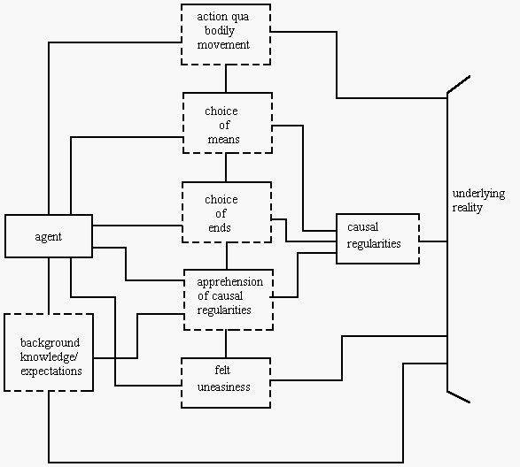

Aristotle, Menger, Mises:
An Essay in the Metaphysics of Economics
Barry Smith
From: History of Political Economy, Annual Supplement to vol. 22 (1990), 263-288.
1. PreambleThere are, familiarly, a range of distinct and competing accounts of the methodological underpinnings of Menger's work. These include Leibnizian, Kantian, Millian, and even Popperian readings; but they include also readings of an Aristotelian sort, and I have myself made a number of contributions in clarification and defence of the latter.(1) Not only, I have argued, does the historical situation in which Menger found himself point to the inevitability of the Aristotelian reading;(2) this reading fits also very naturally to the text of Menger's works.(3)
The diversity of interpretations is not, however, entirely surprising. It is on the one hand a consequence of the fact that Menger breaks new ground in economic theory in part by fashioning new linguistic instruments not yet readily capable of unambiguous interpretation. It reflects further a lack of knowledge on the part of historians of economic thought of the most recent scholarship on 19th and 20th century Austrian philosophy and on the role of Aristotelianism therein.(4) Still more importantly, perhaps, it reflects the fact that Aristotelian ways of thinking were for so long alien to the modern philosophical and scientific mind. For non-Aristotelian readings were advanced above all by those who would be charitable to Menger by stripping his ideas of what was held to be an unfashionable residue of metaphysics.(5)
There is one further reason for the diversity of interpretation, however, which reflects a recurring problem faced by those of us who work in the history of ideas in general and in the history of Austrian ideas in particular. This is the problem of how much credence one ought to award to self-interpretations when seeking an assessment of the nature and significance of a given thinker's achievements. For self-interpretations are very often flawed as a result of the fact that their authors naturally give prominence to the detailed differences between their own ideas and the ideas of those around them; they pay attention, in other words, to what is original, quirky or odd. That which they take for granted, and which they have imbibed from their surrounding culture, is hereby no less naturally, and inevitably ignored. Now as anyone who has worked through the writings of Menger's Austrian philosophical contemporaries very soon becomes aware, the tacit intellectual background of educated Austrians in Menger's day and beyond was Aristotelian through and through to such an extent that Menger himself might have felt the need to draw attention to this background only when attempting to explain his ideas to those, such as Walras, or his own son Karl Jr., who did not share it. Menger is otherwise relatively silent as far as methodological self-interpretation is concerned, at least in the sense that he does not ally himself explicitly for example with the Aristotelian camp.(6) Problems arise, however, when we consider the writings of those of Menger's Austrian contemporaries and successors including Mises, Hayek, as well as Karl Jr. who have sought self-interpretations of Menger at one remove. Such Austrian Austrians are, I want to suggest, least likely to enjoy a conscious awareness of the essence of Austrian economic thinking. Their interpretations of Menger will tend to pick out what is quirky, or especially modern, in Menger at the expense of the shared and therefore for practical purposes invisible background that holds his work together. And this background is, as cannot be too often stress, Aristotelian even if only in the watered-down sense that is still to be more precisely specified. Indeed the Aristotelian background permeated Austrian thought to such an extent that even the newly burgeoning empiricism of the Austrian positivist movement was crucially coloured by it.(7)
2. The Basic Doctrine
Those who have seen fit to advance an Aristotelian reading have of course themselves often left much to be desired in the way of precision and detail. Here, therefore, I shall do my best to set out the precise form of the Aristotelian doctrine that is relevant to the thinking of Menger and his Austrian contemporaries. I shall then go on to demonstrate how the Menger-Mises relation and the general issue of apriorism in economics might profitably be re-examined in its light.
I shall confine myself hereby to general philosophy: the ways in which Aristotle's ethics and politics filtered through into the thinking of the Austrians will not be of concern.(8) As will become clear, it is a highly refined and purified and indeed simplified version of Aristotle's general philosophy that is at issue when we are dealing with 19th and early 20th century Austrian thought. It is an Aristotelianism shorn of all reference to, say, a passive or active intellect or to queer mechanisms for coming to know the world via a `making actual' within the soul of essences existing only `potentially' within things. Only as a result of more recent work on Austrian and German philosophy in general, and on the Brentano school and on the early phenomenologists in particular, has clarity as concerns the nature of Austrian Aristotelianism become possible. And this allows also a move beyond such earlier defences of an Aristotelian interpretation of Menger's work as were advanced for example by Kauder and Hutchinson, which based themselves on little more than superficial analogies.
What then is the basic doctrine of Austrian Aristotelianism that is shared, above all, by Menger, Brentano and their immediate followers? If, at the risk of a certain degree of painful obviousness, we attempt an assay of the common axis running through a number of otherwise disparate modes of thinking, then the basic doctrine might be said to embrace the following theses:
1. The world exists, independently of our thinking and reasoning activities. This world embraces both material and mental aspects (and perhaps other sui generis dimensions, for example of law and culture). And while we might shape the world and contribute to it through our thoughts and actions, detached and objective theorizing about the world in all its aspects is nonetheless possible.
2. There are in the world certain simple `essences' or `natures' or `elements', as well as laws, structures or connections governing these, all of which are strictly universal, both in that they do not change historically and in the sense that they are capable of being instantiated, in principle (which is to say: if the appropriate conditions are satisfied), at all times and in all cultures. The fact that the simple essences and essential structures do not themselves change or develop implies in addition that historical change is a matter, not of changes in the basic building blocks of reality, but of changes in the patterns of their exemplification and in the ways in which they come together to form more complex wholes.
Propositions expressing universal connections amongst essences are called by Menger `exact laws'. Such laws may be either static or dynamic they may concern either the co-existence or the succession of instances of the corresponding simple essences or natures. It is exact laws, as Menger sees it, which constitute a scientific theory in the strict sense. The general laws of essence of which such a theory would consist are subject to no exceptions. In this respect they are comparable, say, to the laws of geometry or mechanics, and contrasted with mere statements of fact and with inductive hypotheses. The aim of the `exact orientation of research' is, as Menger puts it,
the determination of strict laws of the phenomena, of regularities in the succession of phenomena which not only present themselves as exceptionless, but which, when we take account of the ways in which we have come to know them, in fact bear within themselves the guarantee of their own exceptionlessness (1883, p. 38, Eng. p. 59, translation corrected)3. Our experience of this world involves in every case both an individual and a general aspect. As in Aristotle himself, so also in Menger and in the work of other Aristotelians such as Brentano and Reinach, a radical empiricism hereby goes hand in hand with essentialism. The general aspect of experience is conceived by the Aristotelian as something entirely ordinary and matter-of-fact. Thus it is not the work of any separate or special faculty of `intuition' but is rather involved of necessity in every act of perceiving and thinking a fact which makes itself felt in the ubiquitous employment of general terms in all natural languages. Thus the general aspect of experience is as direct and straightforward as is our capacity to distinguish reds from greens, circles from squares, or warnings from congratulatings.For Menger, as for Aristotle, what is general does not exist in isolation from what is individual. Menger is, like other Aristotelians, an immanent realist.(9) He is interested in the essences and laws manifested in this world, not in any separate realm of incorporeal Ideal Forms such as is embraced by philosophers of a Platonistic sort. As Brentano formulates the matter in his study of Aristotle's psychology:
the scientist wants to get to know the crystals and plants and other bodies that he finds here on earth; if therefore he were to grasp the concepts of tetrahedra and octahedra, of trees and grasses, which belong to another world, then he would clearly in no way achieve his goal. (1867, p. 135, Eng. p. 88)Things are no different even in the case of mathematical knowledge:The individual straight line which is in the senses, and the being of this line which the intellect grasps, are essentially identical. One is therefore not allowed to suppose that the intellect should grasp something more immaterial than sense, that it should take into itself something incorporeal or at least something non-sensory. No: the very same thing which is in the intellect is also in the senses, but related to other things in different ways. (op. cit.)As Menger puts it:the goal of research in the field of theoretical economics can only be the determination of the general essence and the general connection of economic phenomena. (Menger 1883, p. 7, n. 4, Eng. p. 37)The theoretical scientist, then, has to learn to recognize the general recurring structures in the flux of reality. And theoretical understanding of a concrete phenomenon cannot be achieved via any mere inductive enumeration of cases. It is attained, rather, only by apprehending the phenomenon in question asa special case of a certain regularity (conformity to law) in the succession, or in the coexistence of phenomena. In other words, we become aware of the basis of the existence and the peculiarity of the essence of a concrete phenomenon by learning to recognize in it merely the exemplification of a conformity-to-law of phenomena in general. (Menger 1883, p. 17, Eng. pp. 44f.)4. The general aspect of experience need be in no sense infallible (it reflects no special source of special knowledge), and may indeed be subject to just the same sorts of errors as is our knowledge of what is individual. Indeed, great difficulties may be set in the way of our attaining knowledge of essential structures of certain sorts, and of our transforming such knowledge into the organized form of a strict theory. Above all we may (as Hume showed) mistakenly suppose that we have grasped a law or structure for psychological reasons of habit. Our knowledge of structures or laws can nevertheless be exact. For the quality of exactness or strict universality is skew to that of infallibility. Episteme may be ruled out in certain circumstances, but true doxa (which is to say, `orthodoxy') may be nonetheless available.5. We can know, albeit under the conditions set out in 4., what the world is like, at least in its broad outlines, both via common sense and via scientific method. Thus Aristotelianism embraces not only commonsense realism but also scientific realism, though Aristotle himself ran these two positions together in ways no longer possible today.(10) The commonsense realism of Menger (as of all Austrian economists) is seen in his treatment of agents, actions, beliefs, desires, etc. In regard to these sorts of entity there is no opposition between reality as it appears to common sense and reality as revealed to scientific theory. Menger's (or the Austrian economists') scientific realism, on the other hand, is revealed in the treatment of phenomena such as spontaneous orders and invisible hand processes, where common sense diverges from the fine structures disclosed by theory.(11)
Taken together with 3., this aspect of the Aristotelian doctrine implies that we can know what the world is like both in its individual and in its general aspect, and our knowledge will likely manifest a progressive improvement, both in depth of penetration and in adequacy to the structures penetrated. Indeed Menger points at the very beginning of the Principles to a correlation between `the higher culture of a people' and the extent to which `human beings penetrate more deeply into the true essence of things and of their own nature' (1871, p. 4, Eng. p. 53).
6. We can know what this world is like, at least in principle, from the detached perspective of an ideal scientific observer. Thus in the social sciences in particular there is no suggestion that only those who are in some sense part of a given culture or form of life can grasp this culture or form of life theoretically. The general structures of reality are not merely capable of being exemplified, in principle, in different times and cultures; like the basic laws of geometry or logic they also enjoy an intrinsic intelligibility which makes them capable of being grasped, again in principle and with differing degrees of difficulty, by knowing subjects of widely differing sorts and from widely differing backgrounds. Indeed, because the essences and essential structures are intelligible, the corresponding laws are capable of being grasped by the scientific theorist in principle on the basis of a single instance.(12)
7. The simple essences or natures pertaining to the various different segments or levels of reality constitute an alphabet of structural parts. These can be combined together in different ways, both statically and dynamically (according to co-existence and according to order of succession). Theoretical research, for Menger,
seeks to ascertain the simplest elements of everything real, elements which must be thought of as strictly typical just because they are the simplest. (1883, p. 41, Eng. p. 60)The theorist must therefore learn to penetrate through the dross of ephemeral detail. He must seek to determine the elementswithout considering whether they are present in reality as independent phenomena; indeed, even without considering whether they can at all be presented in their full purity. In this manner theoretical research arrives at qualitatively strictly typical forms of the phenomena (loc. cit.)Scientific theory results, then, at least in part, when means are found for mapping or picturing the composition of such simple and prototypical constituents into larger wholes. Thus the theoretical science of psychology, for Brentano,seeks to display all the ultimate psychic components from whose combination one with another the totality of psychic phenomena would result, just as the totality of words is yielded by the letters of the alphabet (quoted in Brentano 1982, pp. x-xi).Such `combination' or `composition' is not simply a matter of heaping or gluing together. It is a matter of certain entities or features or properties of entities arising in reflection of the existence of special sorts of combinations of other sorts of entities. Thus for example a good exists as such only if the following prerequisites are simultaneously present:1. A need on the part of some human being.
2. Properties of the object in question which render it capable of being brought into a causal connection with the satisfaction of this need.
3. Knowledge of this causal connection on the part of the person involved.
4. Command of the thing sufficient to direct it to the satisfaction of the need.(13)
If a good exists, then as a matter of de re necessity, entities of these other sorts exist also. I shall return in the sequel to the treatment of such simple structures of de re necessitation. It is these structures, I want to claim, which lie at the core not only of Menger's work but of the entire tradition of Austrian economics.
3. Aristotelianism vs. Accidentalist Atomism
Many of the above theses are of course thin beer, and might seem trivially acceptable. Taken together, however, they do have a certain metaphysical cutting power. It is thesis 5., above all, which establishes the line between the Aristotelian doctrine and that of Kant (for whom there looms behind the world we know an inaccessible world of `things in themselves'). Theses 1. and 5. mark off Austrian Aristotelianism from all idealist doctrines of the sort which embrace the view that the world of experience or of scientific inquiry is somehow created or constituted by the individual subject or by the linguistic community or scientific theory, or what one will. Theses 2. and 6. distinguish the doctrine from all sorts of historicism, as also from hermeneuticist relativism and other modern fancies. And theses 2. and 5. tell us that, for the Aristotelian, scientific or theoretical knowledge is possible even of the structures or essences of the social world, a view shared in common by both Menger and Brentano, and denied (in different ways) by historicists and relativists of differing hues.
Most importantly, however, the doctrine is distinguished via theses 3. and 5. from the positivistic, empiricistic methodology which has been dominant in philosophical circles for the bulk of the present century and which enjoys a position as the unquestioned background of almost all theorizing amongst scientists themselves. Positivism has its roots in atomism, the view that all that exists is atoms associated together in accidental and unintelligible ways and that all intelligible structures and all necessities are merely the result of thought-constructions introduced by man. The origins of the struggle between atomists and Aristotelians in ancient Greek thought are well-summarized by Meikle:
On the one hand there were Democritus and Epicurus, who thought of reality as atomistic small-bits that combine and repel in the void, and who had a hard job accounting for the persisting natures of things, species and genera on that basis. On the other hand there was Aristotle, who realised that no account of such things could be possible without admitting a category of form (or essence), because what a thing is, and what things of its kind are, cannot possibly be explained in terms of their constituent matter (atoms), since that changes while the entity retains its nature and identity over time. (1985, p. 9)Where the atomist sees only one sort of structure in re, the structure of accidental association, the Aristotelian sees in addition intelligible or law-governed structures that he can understand. Where the atomist sees only one sort of change, accidental change (for example of the sort which occurs when a horse is run over by a truck), the Aristotelian sees in addition intelligible or law-governed changes, as, for example, when a foal grows up into a horse. Just as for the Aristotelian the intelligibility of structure can imply that there are certain sorts of structure which are intelligibly impossible, for example a society made up of inanimate objects, so for the Aristotelian there are intelligibly impossible changes, for example of a horse into a truck, or of a stone into a colour. The presence of intelligible changes implies, moreover, that there is no `problem of induction' for a thinker of the Aristotelian sort. When we understand a phenomenon as the instance of a given species, then this understanding relates also to the characteristic patterns of growth and evolution of the phenomen and to its characteristic modes of interaction with other phenomena.
4. The Special Doctrine (Forms of Aristotelianism in the Social Sciences)
We have not yet gone far enough, however, in picking out the essence of the doctrine of Austrian Aristotelianism. For Aristotelianism played a crucial role also in the philosophy of German social thinkers such as Marx,(14) and many other German political economists and legal theorists of the 19th and even of the 20th centuries could have accepted at least the bulk of what has been presented above.(15) The opposition between German and Austrian modes of thinking should not, in this respect, be exaggerated. Thus Brentano, normally and correctly regarded as the Austrian philosopher (and as the philosophical representative of Austrian Aristotelianism) par excellence, was in fact born in Germany. Moreover, his Aristotelianism was decisively influenced by the thinking of the great German metaphysician F. A. Trendelenburg. Equally, however, it would be wrong to ignore the crucial differences, above all as between Marx's methodology on the one hand and the basic doctrine of Austrian Aristotelianism on the other. Thus Menger's doctrine of the strict universality of laws is denied by Marx, for whom laws are in every case specific to `a given social organism'.(16) Moreover, while Marx and Menger share an Aristotelian antipathy to atomism, the holism or collectivism propounded by Marx is in this respect radically more extreme than anything that could have been countenanced by Menger.
Hegel, too, is correctly described as an Aristotelian in many aspects of his thinking. His case is somewhat different from that of Marx, however, since it seems that he denied thesis 1. More precisely, Hegel failed to draw the clear line between act and object of cognition which 1. requires, and he refused to acknowledge any sort of independence of the latter from the former. As he himself writes (in dealing with Aristotle): `thought thinks itself by participation in that which is thought, but thought becomes thought by contact and apprehension, so that thought and the object of thought are the same.'(17) Or as Allen Wood expresses it: `Marx parts company with Hegel precisely because Hegel makes the dialectical nature of thought the basis for the dialectical structure of reality, where Marx holds that just the reverse is the case.' (1981, p. 215)
To specify, therefore, the exact nature of the Austrian Aristotelian view, it will be useful to add to our basic doctrine a number of additional theses specific to the domain of social science which are formulated in such a way as to bring out as clearly as possible the opposition between the Austrian view and views shared by the principal German social theorists who had been influenced by Aristotelian ideas:
8. The theory of value is to be built up exclusively on `subjective' foundations, which is to say exclusively on the basis of the corresponding mental acts and states of human subjects. Thus value for Menger in stark contrast to Marx is to be accounted for exclusively in terms of the satisfaction of human needs and wants. Economic value, in particular, is seen as being derivative of the valuing acts of ultimate consumers, and Menger's thinking might most adequately be encapsulated as the attempt to defend the possibility of an economics which would be at one and the same time both theoretical and subjectivist in the given sense. Among the different representatives of the philosophical school of value theory in Austria (Brentano, Meinong, Ehrenfels, etc.) subjectivism as here defined takes different forms.(18) All of them share with Menger however the view that value exists only in the nexus of human valuing acts.
9. There are no `social wholes' or `social organisms'. Austrian Aristotelians hereby and leaving aside the rather special case of Wieser embrace a doctrine of ontological individualism, which implies also a concomitant methodological individualism, according to which all talk of nations, classes, firms, etc., is to be treated by the social theorist as an in principle eliminable shorthand for talk of individuals. That it is not entirely inappropriate to conceive individualism in either sense as `Aristotelian' is seen for example in Aristotle's own treatment of knowledge and science in terms of the mental acts, states and powers or capacities of individual human subjects.(19)
Economics is methodologically individualist when its laws are seen as being made true in their entirety by patterns of mental acts and actions of individual subjects, so that all economic phenomena are capable of being understood by the theorist as the results or outcomes of combinations and interactions of the thoughts and actions of individuals. Such combinations and interactions are not mere `sums'. Thus neither ontological nor methodological individualism need imply any sort of atomistic reductionism: the individual of which the social theorist treats is, as a result of different sorts of interaction with other individuals, a highly complex entity. He might more properly be conceived as something like a node in the various spontaneous orders in which he is involved. This is a familiar idea, which extends back at least as far as Aristotle.(20) As the Hungarian philosopher Aurel Kolnai puts it in his defence of `conservative libertarianism' published in 1981:
society is not only composed of various parts it is composed of various parts in a multiplicity of ways; and consequently its component parts cannot but overlap. In other words, it consists ultimately of individuals, but only in the sense that it divides into a multiplicity of individuals across several social subdivisions, such that it comprehends the same individual over and over again in line with his various social affiliations (p. 319).Every individual therefore `embodies a multiplicity of social aspects or categories', and these play a crucial role in determining which sorts of essential structures the individual might exemplify.10. There are no (graspable) laws of historical development. Where Marx, in true Aristotelian spirit, sought to establish the `laws of the phenomena', he awarded principal importance to the task of establishing laws of development, which is to say, laws governing the transition from one `form' or `stage' of society to another. He `treats the social movement as a process of natural history governed by laws',(21) and he sees the social theorist as having the capacity to grasp such laws and therefore also in principle to sanction large-scale interferences in the social `organism'. Marx himself thereby accepted both methodological and ontological collectivism; he saw social science as issuing in highly macroscopic laws, for example to the effect that history must pass through certain well-defined `stages'. The Aristotelianism of the Austrians is in this respect more modest: it sees the exact method as being restricted to certain simple essences and essential connections only, in ways which set severe limits on the capacity of theoretical social science to make predictions. The methodological individualism of the Austrians has indeed been criticized by Marxists as a branch of atomism, though such criticisms assume too readily that methodological individualism trades in `sums'.
What, now, of the German historical economists? As already noted, Aristotelian doctrines played a role also in German economic science, not least as a result of the influence of Hegel. Thus for example Roscher not only accepted many of the tenets of the basic Aristotelian doctrine listed above, he also developed, as Streissler has shown, a subjective theory of value along lines very similar to those later taken up by Menger.(22) Such subjectivism was accepted also by Knies. Moreover, Knies and Schmoller agreed with the Austrians in denying the existence of laws of historical development. In all of these respects, therefore, the gulf between Menger and the German historicists is much less than has normally been suggested. The German historicists are still crucially distinguished from the Austrians, however, in remaining wedded to a purely inductivistic methodology, regarding history as providing a basis of fact from out of which laws of economic science could be extracted. For an Aristotelian such as Menger, in contrast (cf. thesis 3. above), enumerative induction can never yield that sort of knowledge of exact law which constitutes a scientific theory.
5. Apriorism
Austrian Aristotelianism as formulated above is first and foremost a doctrine of ontology: it tells us what the world is like and what its objects, states and processes are like, including those capacities, states and processes we call knowledge and science. More generally, it tells us what sorts of relations obtain between the various different segments of reality. The question of apriorism, on the other hand, which is skew to all such ontological concerns even to concerns pertaining to the ontology of knowledge relates exclusively to the sort of account one gives of the conditions under which knowledge is acquired.
Defenders of apriorism share the assumption that we are capable of acquiring knowledge of a special sort, called `a priori knowledge', via non-inductive means. They differ, however, in their accounts of where such knowledge comes from. Two broad families of apriorist views have to be distinguished in this regard.
On the one hand are what we might call impositionist views, which hold that a priori knowledge is possible as a result of the fact that the content of such knowledge reflects merely certain forms or structures that have been imposed or inscribed upon the world by the knowing subject. Knowledge, on such views, is never directly of reality itself; rather, it reflects the `logical structures of the mind', and penetrates to reality only as formed, shaped or modelled by a mind or theory.
On the other hand are reflectionist views, which hold that we can have a priori knowledge of what exists, independently of all impositions or inscriptions of the mind, as a result of the fact that certain structures in the world enjoy some degree of intelligibility in their own right. The knowing subject and the objects of knowledge are for the reflectionist in some sense and to some degree pre-tuned to each other. Direct a priori knowledge of reality itself is therefore possible, at least at some level of generality knowledge of the sort that is involved for example when we recognize the validity of a proof in logic or geometry (where it is difficult to defend the view that the character of validity would be somehow imposed upon the objects in question by the epistemic subject).
This brings us to the principal argument of the reflectionist against all versions of impositionism, which we might call the argument from arbitrariness. Let us suppose, for the moment, that the impositionist is correct in his view that the a priori quality of laws or propositions is entirely a matter of impositions. Imagine, now, that the totality of all laws or propositions is laid out before us. Is it to be completely arbitrary which of these laws or propositions are to enjoy the `imposed' quality of aprioricity? A positive answer to this question is belied by the extent to which there is wide agreement across times and cultures as to which the candidate a priori laws or propositions are. A negative answer, on the other hand, implies that there is some special quality on the side of certain laws or propositions themselves, in virtue of which precisely those laws or propositions do indeed serve as the targets of imposition. Clearly, however, this special quality must itself be prior to any sort of mental imposition which might come to be effected, which means that the original impositionist assumption, to the effect that the a priori quality of laws or propositions is entirely a matter of imposition, turns out to be self-refuting.
The impositionist view finds its classical expression in the work of Kant (whose ideas may be safe against the argument just presented), and special versions of impositionism are to be found also in Hume (in his treatment of causality), in Mach (in his theory of thought economy), and in the work of the logical positivists. The reflectionist view, on the other hand, finds its classical expression in Aristotle; it was developed further by successive waves of scholastics extending far into the modern era, and brought to perfection by Brentano and his successors, above all by Adolf Reinach and other realist phenomenologists in the early years of this century, the latter building on ideas set out by Husserl in his Logical Investigations.
6. Against the Kantian Confusion
There are obvious affinities between the reflectionist view and the doctrine of Austrian Aristotelianism outlined above. Reflectionism can be made compatible also however with other, variant doctrines. Thus the theories of Verstehen propounded by Dilthey (traces of which are perhaps to be found also in Mises) can be said to result when the reflectionist doctrine is combined with a cancellation (for the social sciences) of thesis 6., which asserts the possibility of detached scientific theory.
For Menger, we have argued, at least some of the propositions of economics are a priori in the sense that the corresponding structures enjoy an intrinsic simplicity and intelligibility which makes them capable of being grasped by the economic theorist in principle in a single instance. Note again, however, that the fact that such structures are intelligible need not by any means imply that our knowledge of them is in any sense infallible or incorrigible, nor that it need in every case be easy to obtain or to order into the form of a rigorous theory. Indeed much confusion in the literature on Austrian methodology has arisen because the alien moment of incorrigibility, together with connotations of special mental processes of `insight' or `intuition', have come to be attached to the aprioristic thesis in a way which has made the latter seem eccentric and unscientific.
Still greater confusion has arisen, however, as a result of the no less pervasive assumption that all talk of the a priori must of necessity imply an impositionist or Kantian framework. For the apriorism lying in the background of Menger's thinking is quite clearly reflectionist. Menger believes that there are a priori categories (`essences' or `natures') in reality and that a priori propositions reflect structures or connections among such essences existing autonomously in the sense that they are not the result of any shaping or forming of reality on the part of the experiencing subject. The impositionist apriorist, in contrast, insists that a priori categories must be creatures of the mind. He, therefore, may hold that the issue as to which sorts of economic structures exist is a matter for more or less arbitrary legislation by the economic theorist, or a matter of the `conceptual spectacles' of the economic agent. No grain of such ideas is to be found in Menger.
Menger is working, rather, against the background of an assumption to the effect that the universals of economic reality are not created or imposed in any sense, but are discovered through our theoretical efforts. Economists do not study concepts or other creatures of the mind. Rather, they study the qualitative essences or natures of and the relations between such categories as value, rent, profit, the division of labour, money, etc.
Theoretical economics has the task of investigating the general essence and the general connection of economic phenomena, not of analysing economic concepts and of drawing the conclusions resulting from this analysis. The phenomena, or certain aspects of them, and not their linguistic image, the concepts, are the object of theoretical research in the field of economy. (Menger 1883, p. 6, n. 4, Eng. p. 37)Menger, we might say in this light, seeks to develop a categorial ontology of economic reality in just the Aristotelian sense, and in just the sense, too, in which Brentano sought a categorial ontology of psychological reality. He seeks to establish how the various different sorts of building blocks of economic reality can be combined together in different sorts of simple structured wholes, and to establish through the application of what he himself called a genetico-compositive method how such wholes may originate and how they may develop and become transformed over time into other kinds of wholes.There is, however, one reason why an impositionist or Kantian reading of Menger's views has seemed so tempting to so many. This turns on the fact that Menger lays stress both on the subjectivism and on the methodological individualism of economics. Indeed, the status and possibility of economics as a theoretical science can be said to rest, in his eyes, precisely on the acceptance of the two theses of subjectivism and methodological individualism. For subjectivism implies that an economy is not an autonomous formation with unintelligible properties of its own. Rather one can understand the workings of an economy by coming to an understanding of how the value of goods at earlier stages in the process of production is derived from the value to actual consumers of the products of the later stages. Moreover, one can see why this same understanding must apply ceteris paribus to every economy in whatever time or place. Methodological individualism implies that the whole of economics can in principle admit of an understanding of this sort, that there are no economic structures that cannot be grasped at least in principle in the thought-experiments of the economist. The latter must, as it were, put himself into the shoes of the individual subjects whose processes of thought and action come together to exemplify the structures of which he treats.
None of the above, however, implies that the economist's understanding might flow from the fact that the propositions of economics reflect structures that have been imposed upon the world in Kantian fashion by either the economic theorist or the economic agent. That is, the intelligibility of basic economic structures does not imply ontological dependence of such structures on the mind along the lines suggested by the impositionist. Rather, Menger's view implies precisely that economic reality is such as to manifest certain simple intelligible structures in and of itself. Economic reality is built up in intelligible ways out of structures involving human thought and action. It is for this reason that we are able, by appropriate efforts, to read off these structures in and of themselves.
Such structures, because they are so simple, are (to different degrees) intelligible. But for the same reason they are also universal, in the sense that because they are indispensable to every economic action as such, or to every instance of exchange, barter, rent, profit, etc. they are manifested (in principle) in every economy. They are at least in principle intelligible to everyone who has dealings with the objects concerned (i.e. to every economic agent, to every observer of the behaviour of markets). Yet this does not imply that it is in every case a simple matter to discover what such structures are and nor, a fortiori, does it imply that it is a simple matter to formulate workable theories about them.
Austrian economics is entirely comparable in this respect to the more recent `universals of language' research programme in linguistics. Here, too, the assumption is made that there are structures in (linguistic) reality which are universal to all languages. Such structures are at least tacitly familiar to everyone who has dealings with the objects concerned (i.e. to every speaker of a language). Yet this does not by any means imply that it is a simple matter to discover what such structures are and to formulate workable theories about them. Nor, either, does it imply that the issue as to which sorts of linguistic structures are universal is a matter of the `logical structure of the human mind' or of the `conceptual spectacles' of the language-using subject. And nor does it imply that this issue is merely a matter for arbitrary legislation by the linguistic theorist. Universals of language are not created by the linguist. They are discovered, through painstaking theoretical efforts.
Apriorism in economics, now, does not mean any more than in the case of linguistic universals that economic theory must be free of empirical components. Indeed, it is a difficult matter to sort out precisely what the appropriate role for empirical investigations in economics (and in related disciplines) ought to be. This itself is not something that can be decided a priori. What is certain for apriorists of whatever hue, however, is that quantitative investigations in economics can be carried out coherently only on the basis of at least some prior understanding of the natures of the entities to be measured and compared. For otherwise the economist is not merely measuring in the dark; he is also without any means of tying down the results of his quantitative theorizing to economic reality itself. Pre-empirical (qualitative) categorizations of this reality must necessarily exist before empirical (quantitative) economics can begin. The only issue is the extent to which such categorizations are conscious and explicit.
The ontological grammar of economic reality that is sketched by Menger can be seen in this light as providing a pre-empirical qualitative framework in whose terms specific empirical hypotheses can be formulated and specific mathematical models be given concrete interpretation. Such a foundation cannot itself be derived, on pain of circularity, either from empirical investigations of the more usual sort or from mathematical analyses. It must rather be derived at least in part or so the apriorist argues from that familiarity with particular economic phenomena which we are all of us able to acquire as economic agents.
7. Mises, Kant and Positivism
That the author of Human Action sees his methodology primarily in terms recalling Kantian doctrines is seen, for example, in passages such as: `The a priori sciences logic, mathematics, and praxeology aim at a knowledge unconditionally valid for all beings endowed with the logical structure of the human mind' (Mises 1966, p. 57).
We know now that there is an Aristotelian alternative to the Kantian form of apriorism. This alternative seems not to have been explicitly recognized as such by Mises; but this is hardly surprising, given that, for reasons pointed out above, the special nature of Austrian Aristotelian apriorism was appreciated by very few at the time when Mises was working out the philosophical foundations of his praxeology.(23)
Common to all aprioristic doctrines is a view to the effect that there are laws or propositions which are on the one hand universal and necessary and on the other hand intelligible (capable of being grasped by non-inductive means). Kantian impositionism is the view that such a priori laws or propositions reflect categorial impositions of the mind. As a result of the influence of Frege and Wittgenstein, now, especially as filtered-down through the logical positivism (logical atomism) of the Vienna circle, recent Kantian varieties of apriorism have tended to take an extreme form which sees such categorial impositions as effected always via logic or language. More specifically, a priori propositions are seen as being characterized by the fact that they can in every case be exposed via a process of stripping out defined terms and replacing them with definiens consisting of more primitive expressions as mere tautologies or analytic truths, entirely empty of content and consistent with any and every factual state of the world. `All bachelors are married' is revealed as analytic in this way by being converted into `All unmarried men are unmarried', which is an instance of the logical truth: `All A's which are B are B'.
Mises qua methodologist was very clearly tempted by the idea that the laws of praxeology should be analytic in this sense. The theoretical part of economics would then be a purely formal or analytic discipline whose principles would flow from the logical analysis of certain concepts. Consider, first of all, Mises' assertion to the effect that the propositions of praxeology
are not derived from experience. They are, like those of logic and mathematics, a priori. They are not subject to verification or falsification on the ground of experience and facts. They are both logically and temporally antecedent to any comprehension of historical facts. They are a necessary requirement of any intellectual grasp of historical events. Without them we should not be able to see in the course of events anything else than kaleidoscopic change and chaotic muddle. (1966, p. 32)Here the (Kant- and Wittgenstein-inspired) positivist conception of analyticity is only latently at work. Almost all of the above would, if suitably interpreted, be perfectly consistent with a view of praxeology as an a priori discipline of economics conceived in reflectionist Aristotelian fashion. When we read on, however, then we discover that Mises does in fact run together what is a priori with what is analytic. Praxeology, we are told, is like logic and mathematics in the sense that its content is a matter of empty tautologies: `Aprioristic reasoning is purely conceptual and deductive. It cannot produce anything else but tautologies and analytic judgments.' Thus for example: `In the concept of money all the theorems of monetary theory are already implied.' (1966, p. 38)Thus while impositionism is not explicitly defended by Mises qua methodologist, he does insist on the analytic character of all a priori propositions. The methodology which results is thereby rendered inconsistent with a reflectionist apriorism, since it implies that a priori propositions are empty of content, and clearly propositions that are empty of content are unable to picture anything (intelligible) on the side of the objects of the corresponding theory.
If, however, we wish to hold on to the view that all the propositions of praxeology are analytic in this sense, then we shall have to insist that the whole of praxeology can be erected on the basis of premises involving at most one single primitive non-logical concept.(24) For suppose that there were two such concepts, neither definable in terms of the other. Consider, now, the propositions expressing the non-trivial relations between these concepts. These cannot, ex hypothesi, be analytic, for there are now no defined non-logical terms which could be eliminated in such a way as to reveal the corresponding statements as truths of logic, and no truth of logic contains a plurality of non-logical terms in other than trivial ways. But nor, from the Misesian point of view, can they be merely factual (synthetic a posteriori). On the positivist reading of the aprioristic doctrine, however, no third alternative is available, which implies that the original assumption that there are two (or more) such concepts must be rejected.(25) This helps to make intelligible the repeated insistence of Mises and his followers (and critics) that there is but one single non-logical concept (or `category' or `essence') of the praxeological discipline, the concept human action, from which all propositions of the discipline would somehow be derived:
The scope of praxeology is the explication of the category of human action. All that is needed for the deduction of all praxeological theorems is knowledge of the essence of human action ... The only way to a cognition of these theorems is logical analysis of our inherent knowledge of the category of action... Like logic and mathematics, praxeological knowledge is in us; it does not come from without. (1966, p. 64)(26)
8. Mises the AristotelianWhen once we examine Mises' practice, however, then a quite different picture emerges, and we discover that Mises, too, was not at his best in his methodological self-interpretations. For we are forced to recognize that there is a veritable plenitude of non-logical primitive concepts at the root of praxeology. Indeed, Mises' descriptions of this plenitude in his actual practice in economics, and also in occasional passages in his methodological writings,(27) can be seen to represent what is almost certainly the most sustained realization of the Aristotelian idea in the literature of economic theory.
Action, we are told by Mises, involves apprehension of causal relations and of regularities in the phenomena. It presupposes being in a position to influence causal relations. It presupposes felt uneasiness. It involves the exercise of reason. It is a striving to substitute a more satisfactory for a less satisfactory state of affairs.
Acting man transfers the valuation of ends he aims at to the means he anticipates utilizing. Action takes time, which like other scarce factors must be economized. Action presupposes choosing between various opportunities offered for choice.
Action involves the expectation that purposeful behaviour has the power to remove or at least alleviate uneasiness. It presupposes the uncertainty of the future. It involves meanings which the acting parties attribute to the situation. A thing becomes a means only when reason plans to employ it for the attainment of some end and action really employs it for this purpose.
Certainly some of the concepts involved in the above may reasonably be counted as logical concepts; others may no less reasonably he conceived as being introduced by definitions formulated in terms of other, more primitive concepts. Consider, however, the concepts causation, relative satisfactoriness, reason, uneasiness, valuation, anticipation, means, ends, utilization, time, scarcity, opportunity, choice, uncertainty, expectation, etc., etc. The idea that one could simultaneously and without circularity reduce every one of the concepts in this family to the single concept of action, that they could all be defined by purely logical means in terms of this one single concept, is decisively to be rejected.(28)
How much better would it be to accept that we are dealing here with a family of a priori categories and categorial structures which would be, in the jargon, not analytic but synthetic. The laws governing such structures can almost all of them be very easily expressed in the form of what linguists like to call `implicative universals', which is to say principles to the effect that, if instances of some given species or category K1 exist, then as a matter of necessity these and those other categories K2,...,Kn must be instantiated also. Instances of the necessitating category K1 are then said to be one-sidedly dependent upon instances of the necessitated categories K2,...,Kn. The formal ontological theory of such dependence relations has been worked out in some detail.(29) It can be illustrated in Menger's already mentioned account of the essence of goods at the beginning of the Principles:
If instances of the species good exist, then there exist also instances of the species need, human being, causal connection, knowledge, command, etc.And it is to be found at work also in the context of Misesian praxeology, for example in laws such as:If instances of the species action exist, then there exist also instances of the species choice, apprehension of causal regularities, felt uneasiness, etc.We might represent the a priori relations between such species (relations of de re necessitation) in diagrammatic form as follows, employing links connecting broken to solid walls of adjacent frames to represent relations of one-sided dependence between the entities concerned:If instances of the species choice of ends exist, then so also do instances of the species apprehension of causal regularities, etc.

Figure 1
A diagram of this sort is, we might say, a picture of an a priori structure in the sphere of human action. Similar diagrams can be produced also following indications set out by Reinach in his monograph on speech act theory of 1913 for the a priori necessitation structures exemplified by speech acts of the various different types,(30) and I have sought elsewhere to show how they can be extended also to the structures of entrepreneurial perception analysed by Israel Kirzner, for example in his 1979.(31)
9. If Austrian economics did not exist, would it be necessary to invent it?
Austrian economics, we have said, is both theoretical and subjectivist. Neoclassical economics, in contrast, is neither the one nor the other. For it rests on the positivist thesis that economic reality lacks intrinsic intelligibility tout court, so that no non-trivial part of economic theory could be a priori in any of the senses distinguished above. The propositions of economics are mere inductive hypotheses, and the method of economics consists in the building of testable models, selection among which is effected, at least in principle, on the basis of relative predictive strength. Because realism (in the reflectionist sense) falls out of account as a criterion of selection, such models are repeatedly threatened with becoming shorn of their relation to those basic everyday categories in which the science of economics has its roots. Austrian economics, in contrast, is marked by a willingness to sacrifice both the goal of predictive power and the mathematical tools associated therewith precisely in order to come to an understanding of these basic categories themselves.
The contrast here has seemed to many to justify the striking of pugilistic attitudes. From the Aristotelian apriorist perspective, however, it might begin to appear as if the principles underlying both sorts of economic methodology might possess some grain of truth. For Austrian economics might then be conceived not as an alternative to the economics of model-building and prediction but as a preliminary activity of establishing this missing connection to ground-level economic realities. Austrian economics might, in other words, be conceived as a safe harbour for a practice which at present takes place among neo-classicists only surreptitiously and unsystematically a practice sometimes referred to under the rubric of `taking subjectivism seriously'. This practice might also be conceived as the attempt to exert control in the direction of greater commonsensical realism over the model-building tendencies of mathematical economists. The exercise of such control might lead from this admittedly somewhat idealized perspective to the construction of different kinds of models. But then also it may even be that empirical and mathematical economics will in certain circumstances lead to results which constrain a revision of Austrian economics itself. A view of this sort can be found in germ already in the work of Wieser.(32) He, too, saw economic theory as beginning with the description based in part on introspection, as he saw it of the simplest structures of economic reality, a description which may then be supplemented and to some extent corrected by empirical research into the various ways in which these simple structures may come to be affected contingently, e.g. in different social and historical contexts.
For the moment, though, I am suggesting merely that we consider a thought-experiment, or pipe-dream, to the effect that Austrian economics might be seen as providing a certain sort of foundation for empirical-mathematical economics in something like the way in which geometry provides a foundation for the discipline of physics. We have said that from the Aristotelian perspective a proposition's being a priori signifies that it (or the structure which makes it true) enjoys some degree of intelligibility. What it does not signify, is that our knowledge of such a proposition must be in any sense incorrigible or infallible. Indeed, the idea that empirical discoveries might lead in principle to a correction of the a priori foundation of the economic discipline opens up the exciting prospect of something like a non-Euclidean Austrian economics, perhaps even to a family of such non-Euclidean disciplines, each of which could claim some degree of a priori support. I must confess at once, however, that I have no notion as to how such disciplines might look.
References
Alter, M. 1989. What Do We Know About Menger? Working Paper Number 71, Duke University Program in Political Economy.
Alter, M. (forthcoming) Carl Menger and the Origins of Austrian Economics, Boulder: Westview Press.
Brentano, F. 1867. Die Psychologie des Aristoteles insbesondere seine Lehre vom nous poietikos, Mainz: Kirchberg, repr. Darmstadt: Wissenschaftliche Buchgesellschaft, 1967, Eng. trans. by R. George, The Psychology of Aristotle. Berkeley: University of California Press, 1977.
Brentano, F. 1982. Deskriptive Psychologie. Ed. by R. M. Chisholm and W. Baumgartner. Hamburg: Meiner.
Devitt, M. 1984. Realism and Truth. Oxford: Blackwell.
Fabian, R. and Simons, P. M. 1986. "The Second Austrian School of Value Theory." In Grassl and Smith (eds.), 37-101.
Gould, Carol C. 1978. Marx's Social Ontology. Individuality and Community in Marx's Theory of Social Reality. Cambridge, Mass. and London: The MIT Press.
Grassl, W. and Smith, B. (eds.) 1986. Austrian Economics: Historical and Philosophical Background. London and Sydney: Croom Helm.
Gray, John. 1986. Hayek on Liberty, 2nd ed. Oxford: Blackwell.
Hayek, F. A. von. 1952. The Sensory Order. An Inquiry into the Foundations of Theoretical Psychology. London: Routledge and Kegan Paul.
Hayek, F. A. von 1962. "Rules, Perception and Intelligibility". Proceedings of the British Academy, 48, repr. in Hayek's Studies in Philosophy, Politics and Economics. London: Routledge and Kegan Paul, 1967, 43-65.
Hoppe, H.-H. 1988. Praxeology and Economic Science. Auburn: The Ludwig von Mises Institute.
Husserl, E. 1900-01. Logische Untersuchungen, critical edition, Dordrecht: Nijhoff, 1975, 1984 (A = first edition). Eng. trans. of 2nd ed. by J. N. Findlay as Logical Investigations. London: Routledge and Kegan Paul, 1970.
Johansson, I. 1989. Ontological Investigations: An Inquiry into the Categories of Nature, Man and Society. London: Routledge.
Kirzner, I. 1979. Perception, Opportunity and Profit. Studies in the Theory of Entrepreneurship. Chicago: University of Chicago Press.
Kolnai, A. 1981 "Identity and Division as a Fundamental Theme of Politics". In: B. Smith, ed., Structure and Gestalt. Philosophy and Literature in Austria-Hungary and Her Successor States. Amsterdam: John Benjamin, 317-346.
Kraus, O. 1905. "Die aristotelische Werttheorie in ihren Beziehungen zu den modernen Psychologenschule." Zeitschrift für die gesamte Staatswissenschaft, 61, 573-92.
Kraus, O. 1937. Die Werttheorien. Geschichte und Kritik. Brünn/Vienna/Leipzig: Rohrer.
Larenz, K. 1983. Methodenlehre der Rechtswissenschaft. 5th ed. Berlin/Heidelberg/New York/Tokyo: Springer.
Maki, U. 1989. The Best Way Forward. Scientific Realism. Duke University Working Papers in Economics.
Meikle, S. 1985. Essentialism in the Thought of Karl Marx. London: Duckworth.
Menger, Carl. 1871. Grundsätze der Volkswirtschaftslehre. Vienna: Braumüller. Trans. by J. Dingwall and B. F. Hoselitz as Principles of Economics, New York and London: New York University Press, 1981.
Menger, Carl 1883. Untersuchungen über die Methode der Socialwissenschaften, und der Politischen Oekonomie insbesondere. Leipzig: Duncker & Humblot. Trans. by Francis J. Nock as Investigations into the Method of the Social Sciences with special reference to Economics. New York and London: New York University Press, 1985.
Milford, K. 1988. "Menger's Solution of the Problem of Induction: On the History of Methodological Thought in Economics". Department of Economics, University of Vienna. Working Paper, No. 8806.
Mischler, P. 1857 Grundsätze der National-Oekonomie. Vienna: Friedrich Manz.
Mises, L. von. 1966. Human Action. 3rd revised edition, Chicago: Henry Regnery Company.
Mises, L. von 1981. Epistemological Problems of Economics. New York and London: New York University Press.
Mulligan, K. ed. 1987. Speech Act and Sachverhalt. Reinach and the Foundations of Realist Phenomenology. Dordrecht/Boston/Lancaster: Martinus Nijhoff.
Nyíri, J. C. ed. 1986 From Bolzano to Wittgenstein: The Tradition of Austrian Philosophy, Vienna: Hölder-Pichler-Tempsky.
Reinach, A. 1911. Kants Auffassung des Humeschen Problems. Zeitschrift für Philosophie und philosophische Kritik, 141, 176-209. Repr. in Reinach 1988. Eng. trans. by J. N. Mohanty in Southwestern Journal of Philosophy, 7 (1976), 161-88.
Reinach, A. 1913. "Die apriorischen Grundlagen des bürgerlichen Rechts." Jahrbuch fur Philosophie und phänomenologische Forschung, 1, 685-847. Repr. in Reinach 1988. Eng. trans. in Aletheia, 3 (1983) 1-142.
Reinach, A. 1988. Sämtliche Werke. K. Schuhmann and B. Smith (eds.). Munich and Vienna: Philosophia, forthcoming.
Rothbard, Murray N. 1957. "In Defense of `Extreme Apriorism.'" Southern Economic Journal, 23, 315-20.
Scheler, Max 1973. Formalism in Ethics and Non-Formal Ethics of Value. Trans. by M. S. Frings and R. L. Funk. Evanston: Northwestern University Press.
Schönfeld-Illy, L. 1924 Grenznutzen und Wirtschaftsrechnung. Vienna, repr. Munich: Philosophia, 1983.
Silverman, P. 1989. Antecedents in the Works of Sonnenfels and Kudler. Duke University Working Papers in Economics.
Simons, P. M. 1987 Parts. A Study in Ontology, Oxford: Clarendon Press.
Smith, B. 1982. "Introduction to Adolf Reinach, `On the Theory of the Negative Judgment.'" In Smith, (ed.), 289-313.
Smith, B. 1986. "Austrian Economics and Austrian Philosophy." In Grassl and Smith (eds.), 1-36.
Smith, B. 1986a. "The Theory of Value of Christian von Ehrenfels." In: R. Fabian, ed., Christian von Ehrenfels: Leben und Werk. Amsterdam: Rodopi, 85-111.
Smith, B. 1987. "Austrian Origins of Logical Positivism." In B. Gower, ed., Logical Positivism in Perspective. London and Sydney: Croom Helm, 34-66.
Smith, B. 1988. "Practices of Art." in J. C. Nyíri and B. Smith, eds. Practical Knowledge. Outlines of a Theory of Traditions and Skills, London/Sydney/New York: Croom Helm, 172-209.
Smith, B. 1989. "On the Austrianness of Austrian Economics." Critical Review, 3 (forthcoming).
Smith, B. (ed.) 1982. Parts and Moments. Studies in Logic and Formal Ontology. Munich: Philosophia.
Sowell, T. 1985. Marxism. Philosophy and Economics. London: Unwin Paperbacks.
Streissler, E. 1989. The Influence of German Economics on the Work of Menger and Marshall. Duke University Working Papers in Economics. Working Paper Number 72.
Wieser, F. von 1927 Social Economics, trans. by A. Ford Hinrichs, New York: Adelphi.
Wood, A. 1981. Karl Marx. London: Routledge and Kegan Paul.
Endnotes
1. See the items listed in the bibliography below, especially my 1986 and 1989, and compare also Fabian and Simons 1986.
2. Here we can distinguish as sources of Menger's Aristotelianism first of all the `Popularphilosophie' which was imposed on educational institutions throughout the Habsburg Empire and which incorporated, besides elements derived from the thinking of Leibniz and Wolff, also watered-down versions of Aristotelian and scholastic doctrines. Secondly, there is the 19th century German and Austrian textbook tradition in the social sciences. Here Aristotelian elements played a crucial role not only in the textbook literature of economics (and not least in the work of Mischler, under whom Menger had studied), but also in textbooks of history, legal theory and for example in the writings on political householding of the cameralists (discussed by Silverman in his 1989). On Mischler, see Streissler 1989.
3. Valuable source-material in this respect has been assembled in Milford 1988, who however draws different conclusions from the cited texts, above all because he is concentrating on the implications of Menger's work for economic methodology. Here, in contrast, I am concerned with more basic matters of general philosophy.
4. The most relevant material is summarized in Grassl and Smith, eds., 1986. See also the papers collected in Nyíri, ed., 1986.
5. Such misplaced charity is illustrated for example in the decision of Menger's translators to translate the technical (and in Menger's usage Aristotelian) term `Wesen', normally and correctly translated as `essence', with the more colloquial `nature'. (The translations given here have been adjusted accordingly.)
For an illuminating discussion of an interestingly parallel case of misplaced charity in interpretation, see Meikle 1985 (esp. pp. 8ff.), which rightly lays stress on the Aristotelianism at the core of Marx's thinking. Meikle's work is one among many indications of the extent to which, among philosophers at least, Aristotelian ideas are beginning once more to be taken seriously.
6. The Investigations are, as Alter rightly stresses (1989, pp. 12f.), a critique of the methodological views of the German historicists. They are not the positive statement of Menger's own thinking in this respect announced in 1883, p. 43n (Eng. p. 62).
7. This thesis is defended at length in my 1987. I believe that the remarks in the text have important consequences also for the correct interpretation of Hayek's thinking. Thus John Gray's contention that Hayek's "central theory" is fundamentally Kantian in nature, a thesis based on part on Hayek's own retrospective self-interpretation, is otherwise supported by very little evidence in either the spirit or the letter of Hayek's writings. It is essentially one single passage from Hayek's The Sensory Order which is held by Gray to mark the Kantian strain in Hayek's thought: `The fact that the world which we know seems wholly an orderly world may thus be merely a result of the method by which we perceive it.' (Hayek 1952, 8.39, cf. Gray, p. 12)
When taken in its context, this passage is part of the physiological argument of The Sensory Order - an argument in the spirit of Mach - to the effect that it is the physical similarity of stimuli and their relative frequency of occurrence which gives rise to the order of our sensations. Like other relevant writings of Hayek, such as his "Rules, Perception and Intelligibility" of 1962, it presents a picture of a philosopher allied with Mach and the early precursors of what later came to be called `Gestalt psychology', a picture which is supported also by a historical examination of the influences on Hayek's thought at the time when the first version of The Sensory Order was being written. For both Hayek and Mach, now, there is no distinction between the phenomenal and noumenal world. Indeed there is no transcendentalism of any sort in either thinker. Yet Kantianism, as one normally conceives it, is characterized precisely by the presence of such a transcendental dimension.
8. See the relevant section of Alter (forthcoming), and also the material collected in Grassl and Smith (eds.) for a treatment of this issue in relation to Menger. For the views of the Brentanists on ethics and the theory of value see Kraus 1937.
9. See the discussion of universals in re in Johansson 1989, e.g. pp. 11, 147, and also Maki 1989.
10. On the opposition between commonsense and scientific realism from the point of view of contemporary philosophy see Devitt 1984. Compare also the illuminating discussion of `level ontologies' in Johansson 1989, pp. 26ff.
12. Cf. Menger 1883, p. 40, Eng. p. 60 on the `rule of cognition' for the investigation of theoretical truth':
There is one rule of cognition for the investigation of theoretical truths which is not only, as far as this is possible, verified by experience, but is verified in indubitable fashion by our very laws of thinking.... This is the thesis that whatever was observed in even only one case must always come to appearance again under exactly the same factual conditions ... This rule holds not only of the essence of phenomena, but also of their measure (translation amended).
13. Cf. Menger 1871, p. 3, Eng. p. 52 (section 1, "On the Essence of Goods").
14. Cf. Gould 1978, Wood 1981, Sowell 1985, and above all Meikle 1985. In the light of 6. above it is worth pointing out that Marx embraces also the assumption that science is able to penetrate through the ideological obfuscations by which the commonsensical mind is (as he conceives things) of necessity affected.
15. The survival of Aristotelian ideas in contemporary German legal theory is illustrated for example by Karl Larenz's standard textbook of legal methodology (1983), e.g. in his discussion of the `legal structural types' which the legal theorist `discovers in reality' (p. 338).
16. Cf. Meikle 1985, p. 6, n. 4
17. Lectures on the History of Philosophy, trans. by E. Haldane and F. Simson, London, 1894, vol. 2, p. 147, emphasis mine.
18. See, on this, my 1986a and also the papers collected in Grassl and Smith, eds., 1986.
19. On methodological individualism in Aristotle see also Kraus 1905.
20. See Menger's discussion of the view attributed to Aristotle to the effect that the state is a phenomenon co-original with the existence of man, in his 1883, pp. 267-270, Eng. pp. 220-222.
21. Passage cited by Marx himself in the Afterword to the Second German Edition of vol. 1 of Capital and adopted as a motto to Meikle 1985.
23. Again, the work of the phenomenologist Adolf Reinach is especially important in this regard. For Reinach, who achieved for legal science what Menger and his school have achieved in the field of economics, was especially aware of the non-Kantian nature of his aprioristic views. See also ch. 2 of Max Scheler's Formalism in Ethics, a work in part inspired by the reflectionist theory of the a priori defended by Reinach.
24. We shall need, too, some criterion as to what is to count as a non-logical concept. Consider, for example, the concept part of. This is a formal concept, in the sense that it can be applied, in principle, to all matters without restriction. But it is not treated as a logical concept in the standard textbooks, and nor can it be defined in terms of the logical concepts which are standardly recognized as such. Indeed it seems that the concept part of is a non-logical primitive concept. Consider, now, the proposition
If A is part of B, and B is part of C, then A is part of C.
which asserts that the corresponding relation is transitive. This proposition is not analytic, for there is no law of logic to which it would correspond as a substitution instance. Hence it must be synthetic. But it is surely also a priori, and indeed a priori in the (reflectionist) sense that it pictures the (intelligible) way in which part-whole relations are nested together in the world, independent of our thoughts and actions.
25. I have developed this argument at greater length in my 1986.
27. Consider for example the paragraph beginning `The most general...' on p. 24 of his 1981.
28. Hans-Hermann Hoppe's 1988, to which I hope to return elsewhere, is an interesting defence of a purportedly Kantian reading of Mises which seeks to break through the opposition between impositionism and reflectionism set out above.
29. See Smith (ed.) 1982, Simons 1987, Part III, and Johansson 1989, Ch. 9.
30. Compare the papers collected in Mulligan, ed., 1987.
31. See my 1986. Marx, too, utilized necessitation structures of exactly this sort, for example in his analysis of human work in chapter 5 of Book 1 of Capital. See, on this, my 1988.
32. See e.g. Wieser 1927, pp. 5ff. The idea may be less at home in Menger's own thinking. For Menger the idea of
Testing the exact theory of economy by the full empirical method is simply a methodological absurdity, a failure to recognize the basis of presuppositions of exact research (1883, p. 54, Eng. p. 69).
Examining Menger's account of the ways in which exact types are painstakingly extracted from the realm of economic phenomena by the economic theorist suggests however that he, too, might have assented to something like the retroactive control that is here described. See, on this whole issue, Menger's promissory note on p. 43 (Eng. p. 62) of the Investigations.